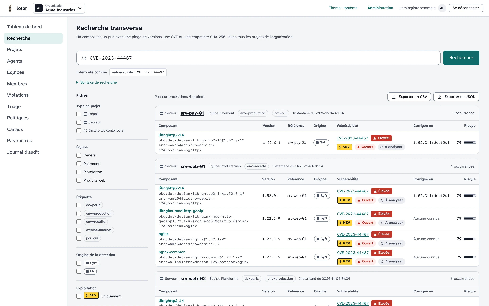

Qui est touché ? Une seule recherche.
La vulnérabilité HTTP/2 « Rapid Reset » est activement exploitée : lotor la retrouve dans les paquets nghttp2 et nginx de quatre serveurs, avec la version qui corrige et le statut de triage de chaque occurrence.
- CVE, GHSA, purl, plage
versou empreinte - Résultats groupés par projet, triés par risque
- Export complet en CSV ou JSON
